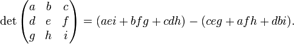
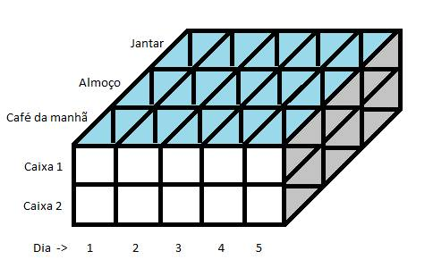
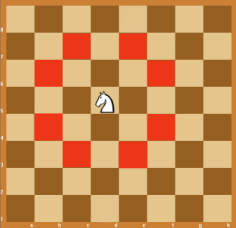

Restantes:
1134
Usuário:
Notas:
Q1: 100
Q2: 100
Q3: 100
Q4: 100
Q5: 100
Q6: 100
Q7: 100
Q8: 100
Q9: 100
Q10: 100
Q11: 100
Q12: 100
Q13: 90
Q14: 100
Q15: 100
Q16: 100
Q17: 81
Q18: 100
IAlg - Lista busca binária, matrizes
Prova Aberta Até: 27/03/2017 16:00:00
Número Máximo de Tentativas: 8
Atenuação da Nota por Tentativa (multiplicativa): 0.9
Nota Máxima por Tentativa:
- 100
- 90
- 81
- 72.9
- 65.61
- 59.049
- 53.1441
- 47.82969
Descrição:
QUESTÕES
Questão 1: Busca binária - ordem decrescente
Faça um programa que realiza busca binária de números inteiros em ordem decrescente. O programa deve escrever a posição do valor procurado. Se o valor procurado não estiver no vetor, a posição -1 (menos um) deverá ser escrita. Se o valor procurado ocorrer mais de uma vez no vetor, a primeira ocorrência que for encontrada é a que deve ser informada.
Entradas:
- A quantidade de números a ser lida.
- Vários números inteiros em ordem decrescente.
- O valor procurado (número inteiro).
Saída:
- A posição do valor procurado.
Exemplo de entrada:
6 8 7 5 4 2 2 5
Exemplo de saída:
2
Peso: 1
Última tentativa: 11/11/2016 19:23:29
Tentativas: 1 de 8
Nota (0 a 100): 100
Status ou Justificativa de Nota: Nenhum erro encontrado.
Tentativas de Resposta:
Questão 2: Matrizes - Média da Diagonal
Faça um programa que leia uma matriz de números n x n e escreva a média dos elementos da sua diagonal principal.
Obs.: Matrizes em Python são implementadas como uma lista composta por listas cujos elementos são todos homogêneos.
Entradas:
- Número inteiro representando a ordem da matriz (número de linhas e colunas)
- Os elementos da matriz, da esquerda para a direita, de cima para baixo.
Saídas:
- Média da diagonal principal da matriz.
Exemplo de entrada:
3 1 2 3 4 5 6 7 8 9
Exemplo de saída:
5
Peso: 1
Última tentativa: 11/11/2016 20:56:26
Tentativas: 1 de 8
Nota (0 a 100): 100
Status ou Justificativa de Nota: Nenhum erro encontrado.
Tentativas de Resposta:
Questão 3: Matrizes - pares, ímpares e média
Faça um programa que preencha uma matriz 3x4 de valores reais, calcule e mostre:
- a quantidade de elementos pares
- a quantidade de elementos ímpares
- a média de todos os elementos
Exemplo de Entrada:
1 2 3 4
5 6 7 7
1 2 3 4
Exemplo de Saída:
5
7
3.75
Peso: 1
Última tentativa: 11/11/2016 21:07:22
Tentativas: 1 de 8
Nota (0 a 100): 100
Status ou Justificativa de Nota: Nenhum erro encontrado.
Tentativas de Resposta:
Questão 4: Matrizes - Determinante de matriz 3x3
O determinante de uma matriz quadrada é um número real que podemos associar à matriz.
O cálculo do determinante de uma matriz 3x3 pode ser feito
pela acumulação dos produtos das suas diagonais, ou seja:

Faça um programa que calcula o determinante de uma matriz 3x3 de números reais.
Obs.: Matrizes em Python são implementadas como uma lista composta por listas cujos elementos são todos homogêneos.
Entrada:
- Os elementos de uma matriz 3x3, da esquerda para direita, de cima para baixo.
Saída:
- O determinante dessa matriz.
Exemplo de entrada:
1 3 10 -1 1 10 0 2 10
Exemplo de saída:
0
Peso: 1
Última tentativa: 11/11/2016 21:22:34
Tentativas: 1 de 8
Nota (0 a 100): 100
Status ou Justificativa de Nota: Nenhum erro encontrado.
Tentativas de Resposta:
Questão 5: Matrizes - Percorrer em zigue-zague
Faça um programa que leia uma matriz de números inteiros. Em seguida, o programa deve escrever todos os elementos da matriz em zigue-zague, ou seja: inicialmente são escritos todos os valores da primeira linha, da esquerda para direita; depois os valores da segunda linha, da direita para esquerda; e assim por diante.
Obs.: Matrizes em Python são implementadas como uma lista composta por listas cujos elementos são todos homogêneos.
Entradas:
- O número de linhas e em seguida o número de colunas da matriz (na mesma linha).
- Os elementos da matriz (números inteiros).
Saídas:
- Todos os valores da matriz, em ordem de zigue-zague.
Exemplo de entrada:
3 6 1 2 3 4 5 6 7 8 9 0 1 2 3 4 5 6 7 8
Exemplo de saída:
1 2 3 4 5 6 2 1 0 9 8 7 3 4 5 6 7 8
Peso: 1
Última tentativa: 11/11/2016 21:53:22
Tentativas: 1 de 8
Nota (0 a 100): 100
Status ou Justificativa de Nota: Nenhum erro encontrado.
Tentativas de Resposta:
Questão 6: Matrizes - Linha do menor
Crie um programa que lê os dados de uma matriz quadrada de inteiros. Depois, o programa deverá imprimir o número da linha que contém o menor valor da matriz.
Obs.: Matrizes em Python são implementadas como uma lista composta por listas cujos elementos são todos homogêneos.
Entradas:
- Número inteiro representando a ordem da matriz (o número de linhas e colunas da matriz);
- Os elementos da matriz, da esquerda para a direita, de cima para baixo.
Saídas:
- O número da linha onde está o menor valor da matriz.
Exemplo de entrada:
3 45 56 32 48 92 21 10 -5 78
Exemplo de saída:
2
Peso: 1
Última tentativa: 11/11/2016 22:36:15
Tentativas: 1 de 8
Nota (0 a 100): 100
Status ou Justificativa de Nota: Nenhum erro encontrado.
Tentativas de Resposta:
Questão 7: Matrizes - Matriz Transposta
Faça um programa que transpõe uma matriz. Transpor uma matriz significa trocar as linhas pelas colunas da matriz. Escrever a matriz transposta é suficiente, não sendo necessário criar antes uma matriz transposta.
Entradas:
- o número de linhas da matriz,
- o número de colunas da matriz,
- os elementos da matriz (números inteiros).
Saídas: O programa deverá escrever a matriz transposta.
Exemplo de entrada:
3 5 1 2 3 4 5 6 7 8 9 0 4 5 6 7 8
Exemplo de saída:
1 6 4 2 7 5 3 8 6 4 9 7 5 0 8
Peso: 1
Última tentativa: 11/11/2016 23:43:30
Tentativas: 1 de 8
Nota (0 a 100): 100
Status ou Justificativa de Nota: Nenhum erro encontrado.
Tentativas de Resposta:
Questão 8: Vetores - Busca sequencial - String
Faça um programa que procura um texto dentro de outro texto.
O programa deve informar a posição da primeira ocorrência do texto procurado. Caso o texto procurado não seja encontrado, a posição informada deverá ser -1 para indicar essa situação especial.
O textos terão no máximo 254 caracteres. Todos os caracteres do texto serão não-brancos.
Entradas:
- O texto no qual será realizada a busca,
- O texto que será buscado no anterior.
Saída:
- a posição em que o texto procurado começou a ser encontrado no outro texto, ou -1 se ele não for encontrado.
Exemplo de entrada:
aabcbcbbacbbaa cbb
Exemplo de saída:
5
Peso: 1
Última tentativa: 12/11/2016 01:42:54
Tentativas: 1 de 8
Nota (0 a 100): 100
Status ou Justificativa de Nota: Nenhum erro encontrado.
Tentativas de Resposta:
Questão 9: Matrizes - Suavização por média
A Computação tem uma área de conhecimento chamada de "Processamento de Imagens", nessa área é comum o processamento de todas as submatrizes de uma matriz. Um algoritmo clássico consiste em suavizar uma matriz, produzindo uma nova matriz em que cada elemento é a média dos nove elementos de uma submatriz 3x3 dos elementos em volta de uma posição qualquer. Como os elementos das bordas não têm submatrizes 3x3 correspondentes, eles podem ficar iguais aos elementos da matriz original.
Faça um programa que lê uma matriz de inteiros e calcula uma nova matriz em que a média de cada submatriz 3x3 da matriz original define um elemento do resultado. As bordas do resultado devem ser iguais às bordas da matriz original. Use divisão inteira no cálculo da média.
Entradas:
- Número de linhas da matriz (sempre será maior que 2);
- número de colunas da matriz (sempre será maior que 2);
- vários valores inteiros que são os elementos da matriz.
Saídas:
- A matriz que resulta da suavização pela média 3x3.
Exemplo de Entrada:
8 10 178 3 99 231 53 72 184 1 164 32 96 69 191 32 226 171 89 135 10 8 106 3 11 216 252 77 216 154 48 147 53 226 150 152 202 203 225 130 204 133 162 44 202 97 77 172 12 166 52 23 174 158 26 185 118 22 6 78 177 55 225 230 25 119 127 227 66 96 101 14 229 7 59 175 105 136 92 117 46 144
Exemplo de Saída:
178 3 99 231 53 72 184 1 164 32 96 84 95 145 147 148 122 111 77 8 106 100 116 159 170 184 155 134 107 147 53 106 122 151 160 159 150 134 117 133 162 132 137 134 136 115 112 116 113 23 174 138 120 108 127 91 93 83 84 55 225 125 109 104 134 99 93 86 92 14 229 7 59 175 105 136 92 117 46 144
Peso: 1
Última tentativa: 25/12/2016 23:18:22
Tentativas: 1 de 8
Nota (0 a 100): 100
Status ou Justificativa de Nota: Nenhum erro encontrado.
Tentativas de Resposta:
Questão 10: Matrizes - Encontrando Pokemons
Um caçador de Pokémons criou um aparelho para coletar múltiplos Pokémons simultaneamente, entretanto o aparelho tem duas restrições: Só pode ser disparado uma vez e só consegue coletar Pokémons a uma determinada distância (nem menos, nem mais). O caçador tem à sua disposição um mapa no formato de uma matriz. A matriz é sempre de um tamanho ímpar e o centro da matriz possui sempre o número 9 representando o caçador. As outras posições da matriz possuem números de 0 a 8. Os números representam a importância do Pokémon. Faça um algoritmo que informada a distância do centro da matriz calcule a soma das importâncias dos Pokémons encontrados.
Os elementos a serem somados são definidos pela distância a partir do centro. No exemplo, esses elementos estão destacados em vermelho. A distância será sempre um número válido, ou seja, que represente um quadrado dentro do tamanho da matriz definida.
Entradas:
- Tamanho da Matriz (sempre será um número ímpar).
- Distância que representa o quadrado que deseja utilizar para calcular a soma das importâncias dos Pokémons.
- Matriz contendo as importâncias dos Pokémons.
Saídas:
- Soma das importâncias dos Pokémons no quadrado definido.
Exemplo de Entrada:
7 2 1 1 1 1 1 1 1 1 5 0 2 0 0 1 1 5 2 2 2 0 1 1 0 4 9 5 0 1 1 0 3 3 3 5 1 1 5 0 0 3 0 1 1 1 1 1 1 1 1
Exemplo de Saída:
25
Peso: 1
Última tentativa: 26/12/2016 00:14:04
Tentativas: 1 de 8
Nota (0 a 100): 100
Status ou Justificativa de Nota: Nenhum erro encontrado.
Tentativas de Resposta:
Questão 11: Matrizes - Minimax
Na teoria de sistemas define-se como elemento minimax de uma matriz o menor elemento da linha onde se encontra o maior elemento da matriz. Escreva um programa que receba uma matriz quadrada de inteiros, 10x10, e retorne seu elemento minimax, juntamente com sua posição. Em caso de números iguais considere o que aparece primeiro. Caso existam números iguais o programa deverá considerar a última posição que o número foi encontrado.
Entrada
- Um matriz de inteiros de tamanho 10x10
Saida
- O menor elemento da linha que tem o maior elemento da matriz.
- A linha e a coluna onde está o elemento do item anterior.
Exemplo de entrada
1 2 3 4 5 6 7 8 9 0 11 4 32 5 6 8 9 2 3 1 2 3 5 6 7 8 1 0 3 1 1 3 45 2 6 8 9 0 2 1 4 30 4 2 6 18 5 0 1 0 2 3 40 2 6 8 19 0 0 0 3 2 5 7 7 8 10 0 2 2 1 3 22 2 13 6 9 1 1 0 4 30 4 2 6 18 5 0 9 10 2 3 34 2 6 8 19 0 0 0
Exemplo de saída
0 3 7
Peso: 1
Última tentativa: 26/12/2016 17:41:35
Tentativas: 1 de 8
Nota (0 a 100): 100
Status ou Justificativa de Nota: Nenhum erro encontrado.
Tentativas de Resposta:
Questão 12: Matrizes - Operações com matrizes
Elabore um programa que preencha uma matriz 10 x 10 com números inteiros, execute as trocas especificadas a seguir e mostre a matriz resultante:
- a linha 2 com a linha 8;
- a coluna 4 com a coluna 10;
- a diagonal principal com a diagonal secundária;
- a linha 5 com a coluna 10.
Entrada:
- Uma matriz 10 x 10 de inteiros.
Saída:
- A matriz 10 x 10 resultante das devidas operações descritas em 1, 2, 3, e 4 (utilizando um índice numérico antes de exibir cada matriz).
Exemplo de entrada:
1 2 3 4 5 6 7 8 9 0 2 3 4 5 6 7 8 9 0 1 3 4 5 6 7 8 9 0 1 2 4 5 6 7 8 9 0 1 2 3 5 6 7 8 9 0 1 2 3 4 6 7 8 9 0 1 2 3 4 5 7 8 9 0 1 2 3 4 5 6 8 9 0 1 2 3 4 5 6 7 9 0 1 2 3 4 5 6 7 8 0 1 2 3 4 5 6 7 8 9
Exemplo de saída:
1. 1 2 3 4 5 6 7 8 9 0 8 9 0 1 2 3 4 5 6 7 3 4 5 6 7 8 9 0 1 2 4 5 6 7 8 9 0 1 2 3 5 6 7 8 9 0 1 2 3 4 6 7 8 9 0 1 2 3 4 5 7 8 9 0 1 2 3 4 5 6 2 3 4 5 6 7 8 9 0 1 9 0 1 2 3 4 5 6 7 8 0 1 2 3 4 5 6 7 8 9 2. 1 2 3 0 5 6 7 8 9 4 2 3 4 1 6 7 8 9 0 5 3 4 5 2 7 8 9 0 1 6 4 5 6 3 8 9 0 1 2 7 5 6 7 4 9 0 1 2 3 8 6 7 8 5 0 1 2 3 4 9 7 8 9 6 1 2 3 4 5 0 8 9 0 7 2 3 4 5 6 1 9 0 1 8 3 4 5 6 7 2 0 1 2 9 4 5 6 7 8 3 3. 0 2 3 4 5 6 7 8 9 1 2 0 4 5 6 7 8 9 3 1 3 4 0 6 7 8 9 5 1 2 4 5 6 0 8 9 7 1 2 3 5 6 7 8 0 9 1 2 3 4 6 7 8 9 1 0 2 3 4 5 7 8 9 3 1 2 0 4 5 6 8 9 5 1 2 3 4 0 6 7 9 7 1 2 3 4 5 6 0 8 9 1 2 3 4 5 6 7 8 0 4. 1 2 3 4 5 6 7 8 9 5 2 3 4 5 6 7 8 9 0 6 3 4 5 6 7 8 9 0 1 7 4 5 6 7 8 9 0 1 2 8 0 1 2 3 4 5 6 7 8 9 6 7 8 9 0 1 2 3 4 0 7 8 9 0 1 2 3 4 5 1 8 9 0 1 2 3 4 5 6 2 9 0 1 2 3 4 5 6 7 3 0 1 2 3 4 5 6 7 8 4
Peso: 1
Última tentativa: 01/01/2017 22:55:33
Tentativas: 1 de 8
Nota (0 a 100): 100
Status ou Justificativa de Nota: Nenhum erro encontrado.
Tentativas de Resposta:
Questão 13: Matrizes - Divisão pelo maior em módulo da linha
Faça um programa que crie uma matriz NxM e a preencha com números
inteiros. Após isso, divida todos elementos de cada linha pelo maior
elemento em módulo da linha. O programa deverá escrever a matriz
original e a modificada.
Obs: Caso o maior elemento em módulo da linha seja 0, ou seja, se
houver divisão por zero, imprima APENAS -1 ao final do programa.
Entradas:
int n, m- Tamanho da matriz.float vetor [n][m]- Elementos da matriz.
Saídas:
- Matriz original.
- Matriz após as operações.
Exemplos de Entradas e Saídas:
Entradas:
3 3 1.8 9 18 -50 10 5 -4 -8 -16
Saídas:
1.8 9 18 -50 10 5 -4 -8 -16 0.1 0.5 1 -1 0.2 0.1 -0.25 -0.5 -1
Peso: 1
Última tentativa: 26/03/2017 20:57:21
Tentativas: 2 de 8
Nota (0 a 100): 90
Status ou Justificativa de Nota: Nenhum erro encontrado.
Tentativas de Resposta:
Questão 14: Matrizes - Caixas de um restaurante (matriz tridimensional)
Faça um programa que receba informações de dois caixas de um restaurante durante 5 dias em três períodos diários (café, almoço e jantar). Ao fim disso, o programa deve informar a soma dos períodos por dia de cada caixa e o total dos 5 dias em cada caixa.
Obs.: Matrizes tridimensionais em Python são implementadas como uma lista principal composta por listas secundárias, sendo que cada lista secundária é composta por listas terciárias cujos elementos são todos homogêneos.
Entrada:
- As informações dos 2 caixas nos 5 dias em 3 períodos. Primeiro serão lidos os 3 períodos do dia 1 para o caixa 1, depois os 3 períodos do dia 2 para o caixa 1, e assim por diante. Todos valores são inteiros, e a entrada consiste em um valor por linha.
Saída:
- As informações do caixa 1 (um dia por linha).
- O total do caixa 1.
- As informações do caixa 2 (um dia por linha).
- O total do caixa 2.
Exemplo de entradas:
10 15 20 31 5 9 8 9 10 45 50 9 70 10 9 32 43 10 56 78 10 85 11 13 7 3 98 12 15 68
Exemplo de saídas:
45 45 27 104 89 310 85 144 109 108 95 541
Peso: 1
Última tentativa: 05/01/2017 20:50:46
Tentativas: 1 de 8
Nota (0 a 100): 100
Status ou Justificativa de Nota: Nenhum erro encontrado.
Tentativas de Resposta:
Questão 15: Matrizes - Repetições
Faça um programa que lê uma matriz de números inteiros entre 0 e 9 (extremos inclusive). O programa deve contar quantas vezes cada elemento ocorre na matriz para então informar quais elementos repetem na matriz e quantas vezes cada um deles foi encontrado.
Obs.: Matrizes em Python são implementadas como uma lista composta por listas cujos elementos são todos homogêneos.
Entradas:
- O número de linhas e colunas da matriz.
- Os elementos da matriz (números inteiros, de 0 até 9), da esquerda para a direita, de cima para baixo.
Saídas:
- Número que se repete na matriz, seguido do número de ocorrências do valor. Os valores devem aparecer em ordem crescente. A ordem é dada pelo valor e não pelo número de repetições. Caso a matriz não tenha nenhum valor repetido, o programa deve escrever -1 para sinalizar tal situação.
Exemplo de entrada 1:
3 6 9 2 9 4 5 9 6 1 1 9 0 9 0 1 2 3 8 1
Exemplo de saída 1:
0 2 1 4 2 2 9 5
Exemplo de entrada 2:
3 2 9 8 7 6 5 4
Exemplo de saída 2:
-1
Peso: 1
Última tentativa: 05/01/2017 21:28:03
Tentativas: 1 de 8
Nota (0 a 100): 100
Status ou Justificativa de Nota: Nenhum erro encontrado.
Tentativas de Resposta:
Questão 16: Matrizes - Determinante de matriz 4x4
Faça um algoritmo que calcule o determinante de uma matriz 4x4.
Entradas:
float matriz[4][4]- Matriz que será usada para o cálculo do determinante.
Saídas:
- Determinante da matriz.
Exemplos de Entradas e Saídas:
Entrada:
1.0 0 5.0 0 2.0 -1.0 0 3.0 3.0 0 2.0 0 7.0 0 6.0 5.0
Saída:
65
Referências:
Peso: 1
Última tentativa: 08/01/2017 21:34:29
Tentativas: 1 de 8
Nota (0 a 100): 100
Status ou Justificativa de Nota: Nenhum erro encontrado.
Tentativas de Resposta:
Questão 17: Matrizes - Movimento Cavalo
Faça um programa que receba o tamanho N e a matriz NxN. A matriz conterá os números 0 (vazio), 1 (cavalo), 2 (peões).
A matriz possuirá apenas um número 1, que reprensentará o cavalo como dito acima. Localize o "cavalo" e verifique quantos "peões" (2) o "cavalo" conseguirá eliminar, ou seja, de zero a oito peões posicionados ao redor do cavalo. O programa deverá escrever a quantidade de peões que podem ser eliminados.
Obs: O cavalo pode estar em qualquer posição da matriz e não pode eliminar um peão posicionado "atrás" de outro.
Entradas:
- Tamanho da matriz (inteiro).
- Tabuleiro do jogo (matriz de inteiros).
Saídas:
- Quantos peões podem ser comidos (inteiro).
Exemplo de entradas:
5 2 0 0 2 2 0 2 0 2 2 0 0 1 2 2 2 2 2 0 0 0 0 0 0 0
Exemplo de saída:
3
Peso: 1
Última tentativa: 08/01/2017 23:33:28
Tentativas: 3 de 8
Nota (0 a 100): 81
Status ou Justificativa de Nota: Nenhum erro encontrado.
Tentativas de Resposta:
Questão 18: Matriz - Método de Gauss-Jordan
Implemente um programa que recebe uma matriz que representa um sistema linear. Através do algoritmo de Gauss-Jordan você deve escalonar a matriz passada e escrever a matriz reduzida na tela.
Entradas:
int n- Número de linhas da matriz.float matriz[n][m]- Matriz NxM que deve ser escalonada.
Saídas:
- Matriz escalonada.
Exemplos de Entradas e Saídas:
Entradas:
3 1.0 10.0 -12.0 120.0 4.0 -2.0 -20.0 60.0 -1.0 1.0 5.0 10.0
Saídas:
1.0 0 0 340.0 0 1.0 0 50.0 0 0 1.0 60.0
Referências:
Peso: 1
Última tentativa: 18/01/2017 17:16:23
Tentativas: 1 de 8
Nota (0 a 100): 100
Status ou Justificativa de Nota: Nenhum erro encontrado.
Tentativas de Resposta: